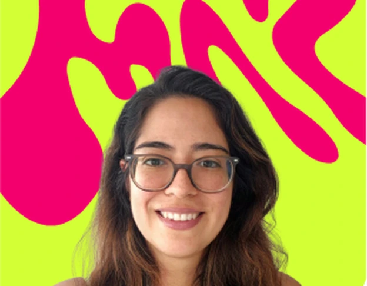

About
Proactive, motivated and curious.
A proactive, motivated product designer with strong leadership skills and a passion for crafting exceptional user experiences through innovative methodologies. I've worked with a wide variety of clients, delivering complex B2B products in Colombia and the United States.
- Based in
- Bucaramanga, Colombia · Remote, on-site or open to relocation
- Languages
- Spanish (native), English C1
- Education
- Bachelor's degree in Graphic Design, José María Vargas University (2012)
Mindset
How I think
Leadership
I work alongside product managers, engineers and stakeholders to align design decisions with business goals, guiding teams from research and ideation through delivery with a shared vision.
Design as strategy
Design isn't decoration. When it has a seat at the table, shaping roadmaps and connecting user needs to business outcomes, it becomes one of a product team's most powerful tools.
Growth mindset
I stay genuinely curious. I explore new tools and methods, and right now I'm going deep on how AI is changing the way we research, prototype and build products. That curiosity directly shapes how I design.